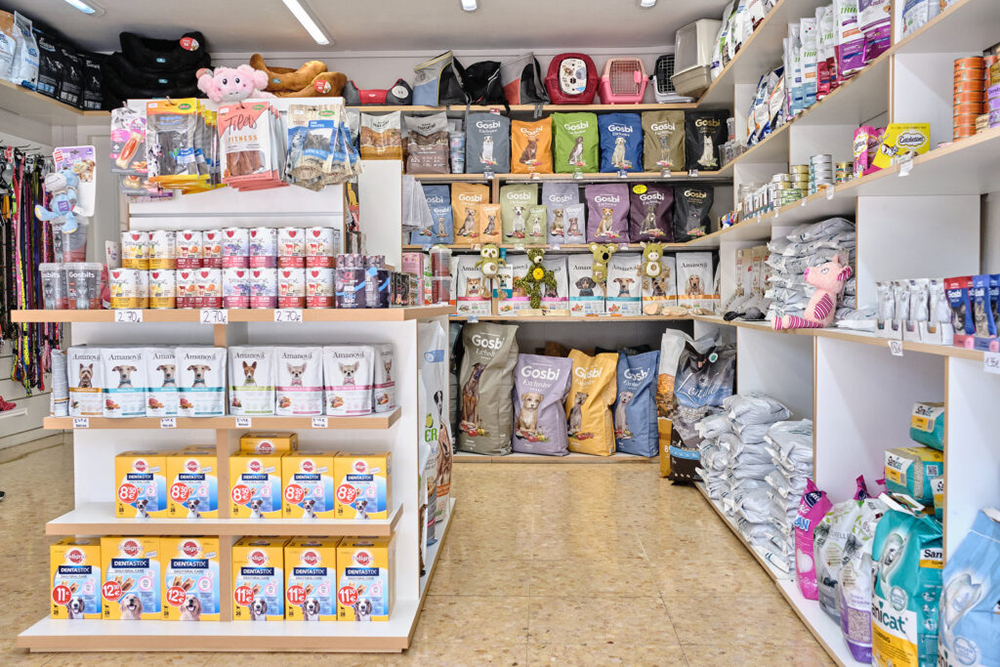

La Clínica Veterinaria Azteca no solo se preocupa por la salud de tu mascota, sino también por su bienestar general. Es por eso que ofrecemos una tienda especializada con una amplia gama de productos para todas tus necesidades relacionadas con mascotas.
En Azteca, nuestra tienda especializada ofrece: Alimentos para mascotas: Tenemos una gran variedad de alimentos para mascotas, incluyendo dietas especializadas y golosinas saludables. Juguetes: Nuestra selección de juguetes mantendrá a tu mascota entretenida y activa. Ropa y accesorios: Desde ropa hasta collares, correas y más, tenemos todo lo que necesitas para que tu mascota luzca a la moda. Productos de salud: Ofrecemos una variedad de productos de salud para mascotas, incluyendo suplementos, medicamentos sin receta y más.
En la Clínica Veterinaria Azteca, estamos comprometidos con satisfacer todas las necesidades de las mascotas. Nuestro personal experto está disponible para ayudarte a encontrar los productos adecuados para tu mascota. Ya sea que necesites un nuevo collar, una dieta especializada o un juguete divertido, nuestra tienda especializada tiene lo que necesitas. Si tienes alguna pregunta sobre nuestros productos o te gustaría visitar nuestra tienda especializada, no dudes en contactarnos. Estamos aquí para ayudarte a cuidar de la mejor manera posible a tu mascota.
